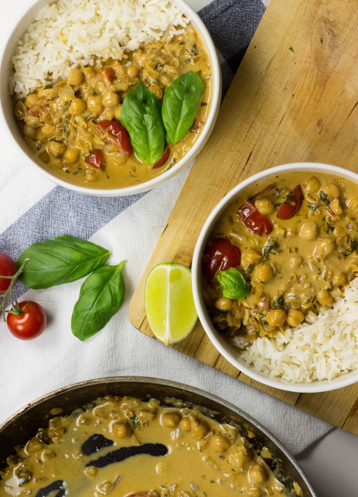

Coconut Chickpea Curry Rice
The creamy sauce, the exotic spices and the crunchy poppadoms all combine together to make one of the world’s favourite meals
Chickpeas as the main bulk of the meal creates a lovely texture and provides us with a filling boost of fibre and iron
This is a delicious and creamy coconut chickpea curry that you’ll want to eat with family and friends time and time again.
Section 1: Ingredients
- ½ cup basmati rice
- 1 cup water
- 2 pinch salt
- 2 onions
- 1 tbsp olive oil
- 3 clove garlic
- ½ lime
- 1-2 tsp curry paste
- 1 can low fat coconut milk (375ml)
- 1 can chickpeas (435g)
- 1-2 tbsp soy sauce (try one tbsp first, add another if required)
- 2-3 medium sized tomato
- 1 cup fresh basil
- 1 tsp maple syrup (sugar is fine too)
Section 2: Instructions
- Add the rice, water and a pinch of salt and bring to a boil. Keep an eye on the rice. When the water is boiling put a lid on it, reduce the heat to low and cook for another 8-10 mins.
- While this is happening chop the onions, garlic, basil and juice the lime.
- Put the olive oil and onions into a large pan and cook on a low-medium heat until the onions start to soften and turn clear, about 5 minutes. Add the garlic for a further 1 minute.
- Add curry paste and the milk, stirring until the curry is dissolved. Add a pinch of salt. Taste test – if you’d like your curry a little stronger then add another tsp.
- Throw in the drained and rinsed chickpeas. If using sugar snap peas (or other green veg), add them now too. Cook on a medium heat for around 5 minutes, bringing the curry to a boil. If it starts to burn, reduce heat immediately.
- Add the chopped tomatoes, chopped basil, lime juice, soy sauce and gently simmer the curry for another 2 minutes.
- Taste test again, and if desired add a another tbsp soy sauce and the syrup or brown sugar. Give it another stir.
- The rice should be done by now too – fork it through to make it fluffy.
- Serve the curry and rice together with poppadoms and naan bread as optional sides.
NOTES:
- How do restaurants make curry so creamy? The key ingredient to making any curry nice and creamy in any restaurant is definitely the canned coconut milk.
- Curry better with coconut or milk? Coconut milk is preferred to other dairy and non-dairy milk alternatives in curry as it is rich and creamy. It helps to give a thicker sauce and carry the flavour of the spices in the dish.
- Low carb: To keep those carbs down swap out the basmati rice with cauliflower rice.